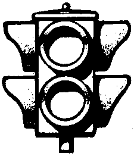

|  |
State Design Pattern The best way to describe the state design pattern is by describing a behavior we all (should) know. A simple traffic light is shown to the left. In it, we see two lamps, one on top (Red, or STOP) and one on the bottom (Green, or GO.) The light thus has two separate "states": a "red" state and a "green" state. Determination of which state comes next will be delegated to the states. How state works The "State" design pattern relies on an arbitary number of objects that represent the states our main object can have. In our case, the main object is called "TrafficLight". Our states will share a common interface, which we will call "ILampState". That interface will define the methods that our states will have in common. |
|
public Color getColor() {
return _myState.getColor(); } |
getColor() is guaranteed to be
present for all of the implementations of the states. Close the code
window.
ILampState). We now need to begin defining the methods
which our Lamp States must implement. Ask yourself the following: "What does a
lamp state need to do?"
getColor() that belongs to
ILampState. Since we're defining the method in the interface first, it doesn't need to have
a body. When we have concrete implementation of the interface, we
will define how the "getColor()" method will actually get the color. Interfaces
provide a set of guaranteed methods that concrete classes will have.
|
public interface ILampState {
public java.awt.Color getColor(); } |
|
public void changeColor() {
_myState = _myState.getNextState(); } |
|
public TrafficLight() { _myState = new RedState(); } |